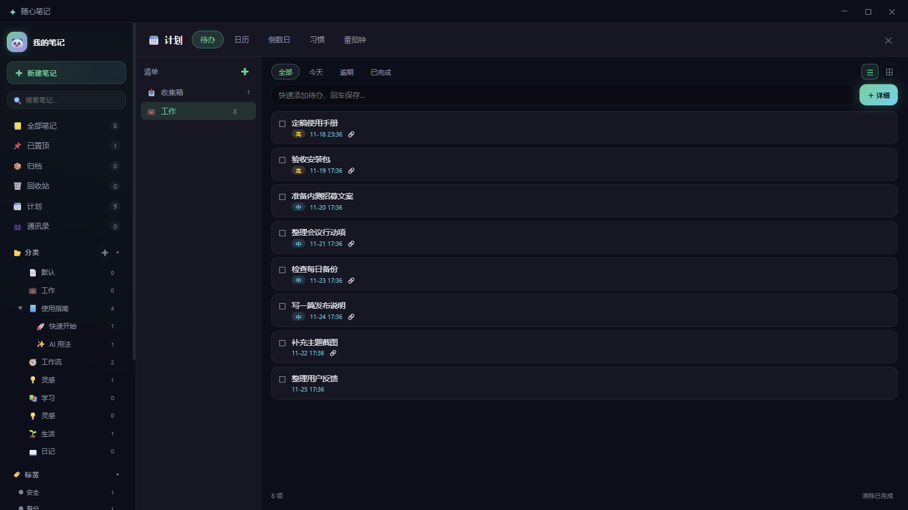
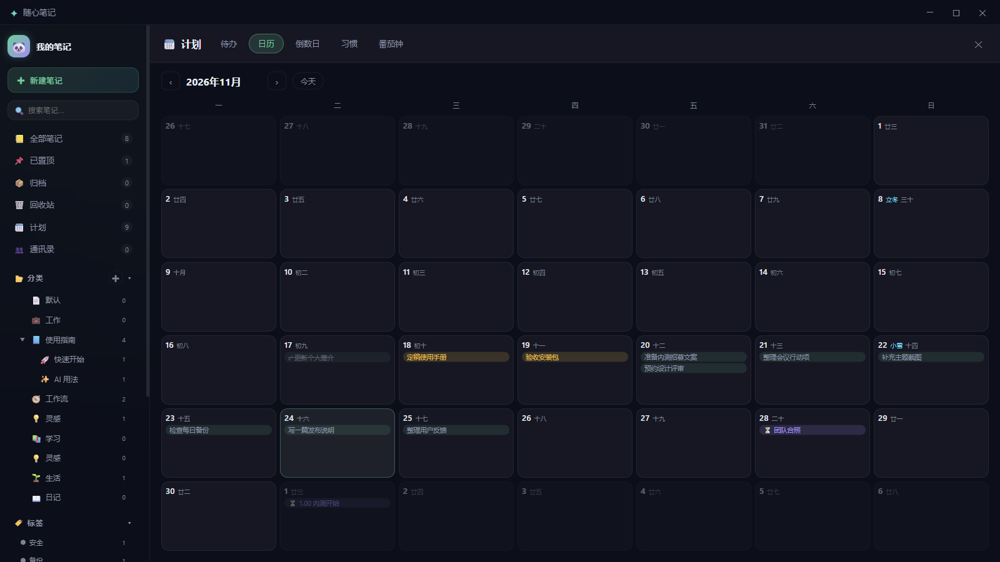
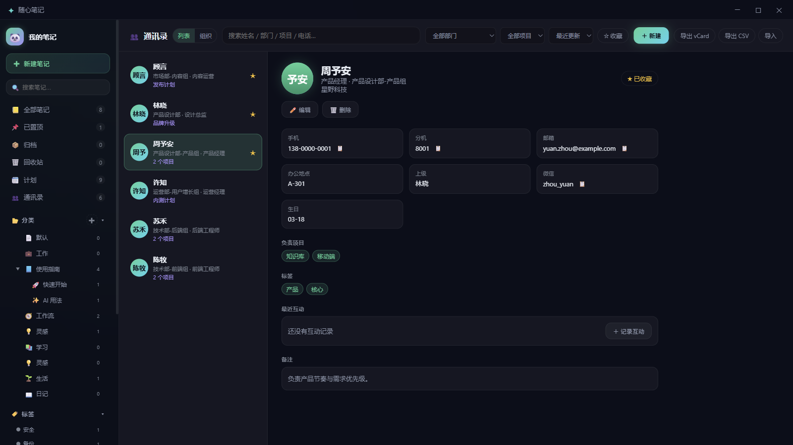
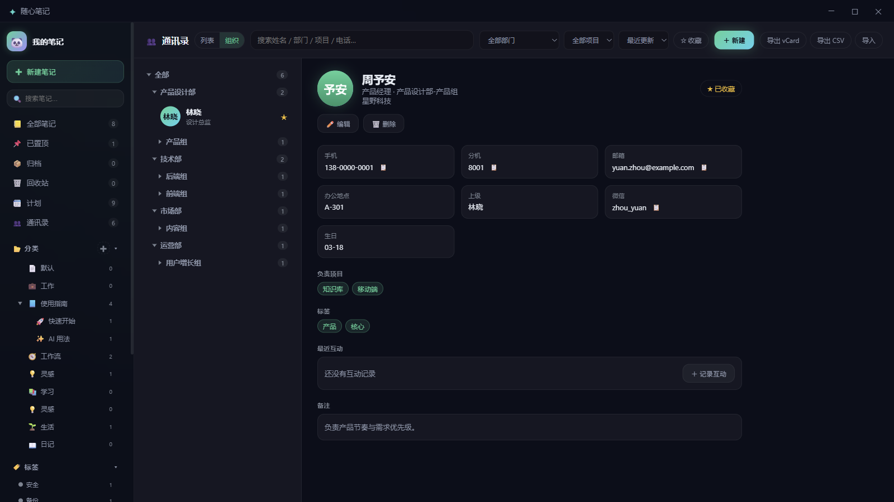
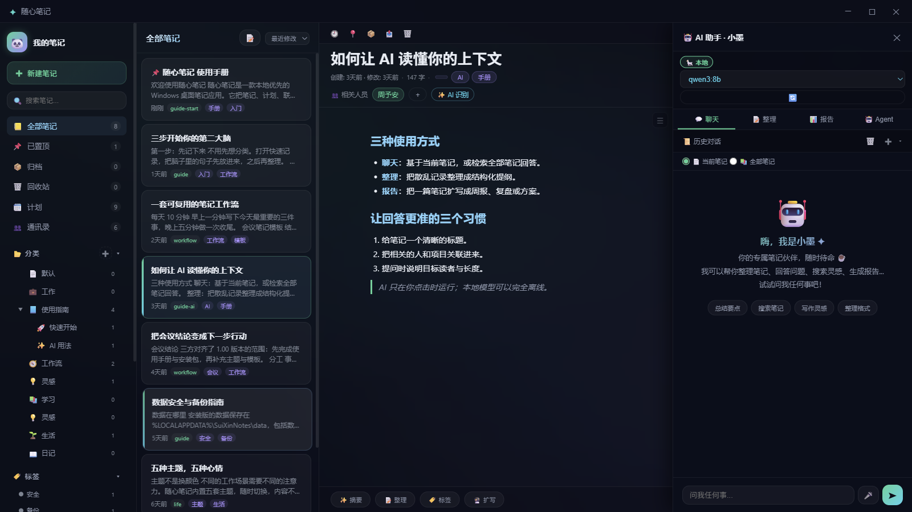
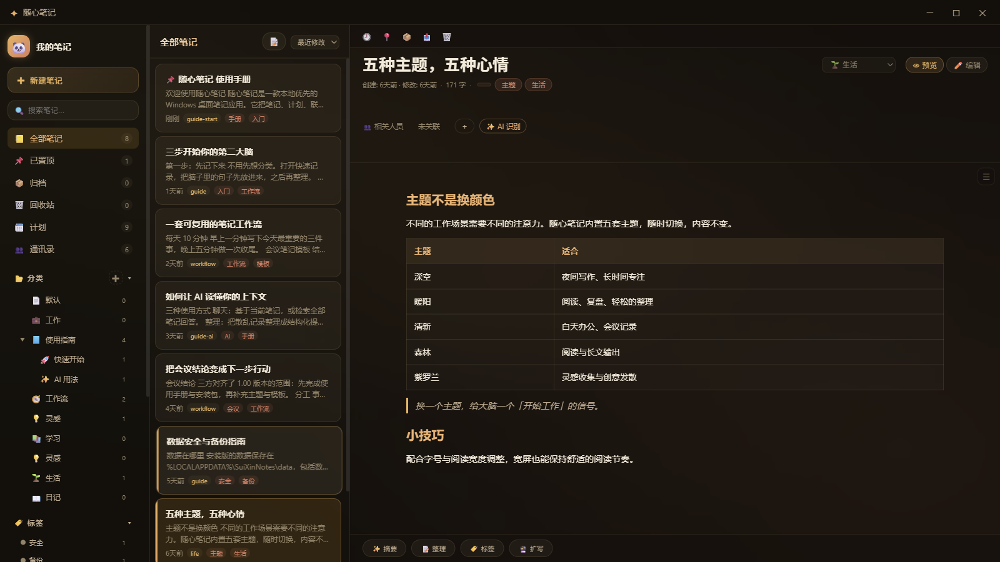

笔记、待办、通讯录共用同一个本地数据库。写会议纪要时能带出参会人，建待办时能挂回原笔记，AI 也能读到这些上下文。
18 色字体、5 色高亮、表格、图片、代码块与 Markdown；编辑与预览一键切换，自动保存。
分类树、彩色标签、[[双向链接]] 与反链面板；版本历史随时回看，误删进回收站。
待办、日历（农历 + 节气）、倒数日、习惯打卡、番茄钟，五个视图同一套数据。
部门 / 项目 / 收藏筛选，组织架构树、生日提醒、最近互动，vCard / CSV 导入导出。
聊天、整理、报告、Agent 四种模式；能搜索笔记、读联系人、建待办，本地 Ollama 或在线模型。
SQLite 本地存储、每日备份、笔记版本、回收站、应用锁与整库加密，数据始终在你自己手里。
工具栏齐全但不喧宾夺主。输入即自动保存，切到预览就是干净的阅读页；长文有目录、进度条和回到顶部。


待办可以挂回某篇笔记、指定协作人、设置截止与提醒；日历同时显示农历和二十四节气，倒数日与习惯打卡各就各位。


按部门路径自动生成组织树，点开就是完整名片；生日、最近互动、关联笔记都在一页里。
当前笔记、全库检索、关联联系人、未完成待办，都会成为 AI 的参考。它可以在聊天里直接搜索笔记、创建待办、把相关人员关联到笔记。

所有内容默认存在本机 SQLite，不上传、不注册、不订阅。需要时再开启应用锁或整库加密。

深空、暖阳、清新、森林、紫夜，一键切换。桌宠肚子上的三个按钮可以直接打开快速记录、计划与 AI；也可以完全关掉，保持安静。
双击 MSI 即可安装，无需管理员权限；覆盖安装保留数据，卸载也不会删除笔记。
⬇ 下载 随心笔记 1.00（MSI） 📖 查看使用手册软件本身不收费。AI 可以接本地 Ollama（免费、离线，需自行安装并下载模型），也可以接 OpenAI、DeepSeek、SiliconFlow、智谱、Gemini 等在线服务，费用由对应服务商收取。没有配置 AI 时，笔记、计划、通讯录等核心功能完全可用。
安装版存在 %LOCALAPPDATA%\SuiXinNotes\data。卸载只删除程序，不删除这个目录；重新安装后数据仍在。换电脑可复制整个 data 目录，或用备份文件恢复。
首次需要初始化数据库、界面缓存和本地组件，通常 5–6 秒；之后启动约 3 秒。若长时间停在「正在连接」，检查是否有安全软件拦截，或查看 data\app.log。
当前安装包未购买代码签名证书，Windows SmartScreen 会提示。点「更多信息 → 仍要运行」即可。可用页面上的 SHA256 校验安装包完整性。
可以。单篇笔记支持导出 HTML，文件生成在 data\exports 并自动打开目录；回收站、版本历史也支持单篇恢复。
1.00 以本地单机为主，不内置云同步。可以通过复制 data 目录或备份文件在电脑之间迁移；后续版本会评估同步方案。